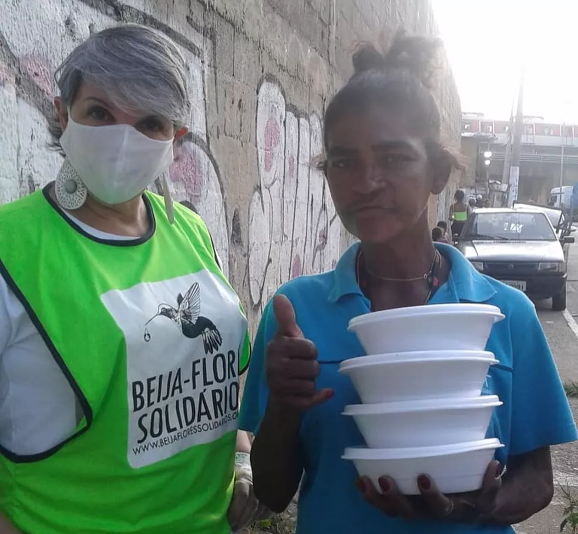
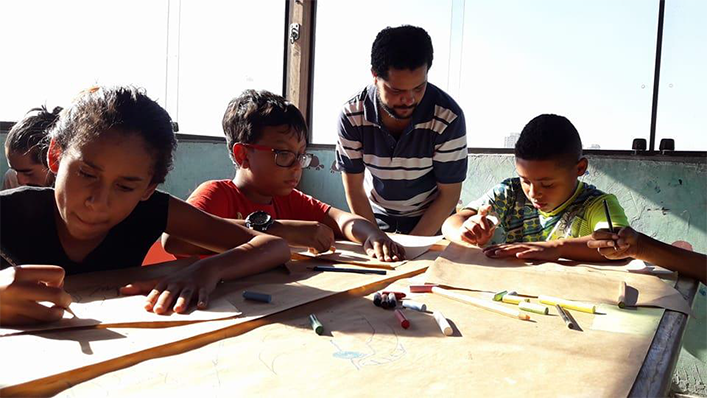
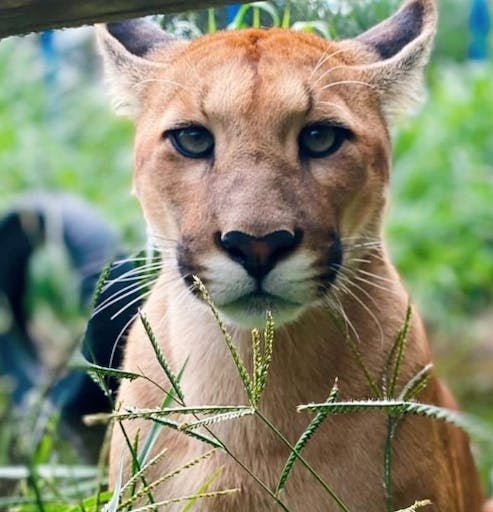
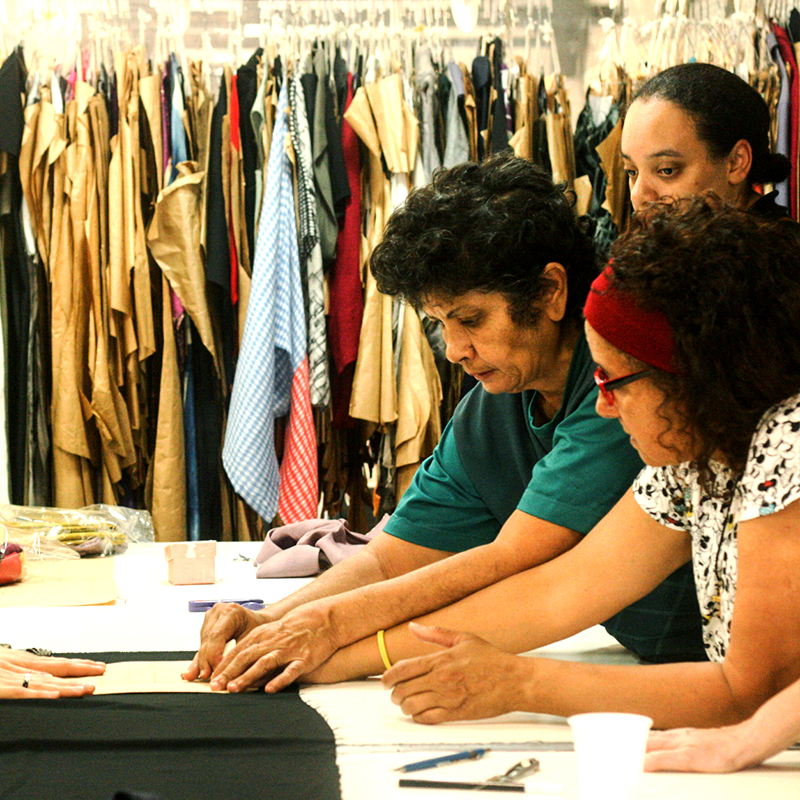
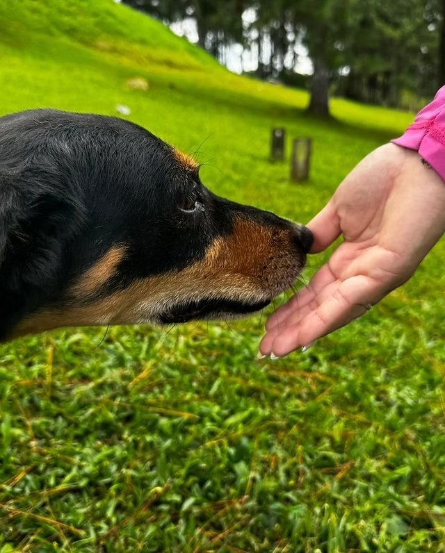

AIPEC - Associação para Inclusão pelo Esporte e Cultura
Promove a inclusão social através do esporte e cultura, contribuindo para o desenvolvimento humano.

Beija-Flores Solidários
Mobiliza ações voluntárias para ajudar pessoas em situação de vulnerabilidade social.

Projeto Alavanca Brasil
Transforma comunidades através de ações educacionais e sociais que geram impacto positivo.

Instituto Ampara Animal
Protege animais abandonados e promove a conscientização sobre a posse responsável.

Ecotece (Vestir Consciente)
Promove a moda sustentável com projetos que valorizam o meio ambiente e comunidades locais.

Cão Sem Dono
Cuida de cães abandonados e busca novos lares para eles, promovendo campanhas de adoção.